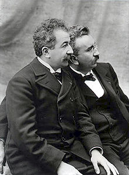

La historia del cine como espectáculo comenzó en París el 28 de diciembre de 1895. Desde entonces ha experimentado una serie de cambios en varios sentidos. Por un lado, la tecnología del cinematógrafo ha evolucionado mucho, desde sus inicios con el cine mudo de los hermanos Lumière hasta el cine digital del siglo XXI. Por otro lado, ha evolucionado el lenguaje cinematográfico, incluidas las convenciones del género, y han surgido así distintos géneros cinematográficos. En tercer lugar, ha evolucionado con la sociedad, con lo que se desarrollaron distintos movimientos cinematográficos.
Durante los primeros 30 años las películas fueron completamente mudas. Suele hablarse de cine mudo, de la época silente o muda, y esto no es del todo exacto, aunque es cierto que las proyecciones no podían por sí mismas sino mostrar imágenes en movimiento sin sonido alguno. Pero las proyecciones en las salas iban acompañadas de la música tocada por un pianista o una pequeña orquesta y además comentada por la voz de un explicador, imprescindible figura que hacía posible que multitudes analfabetas o inmigrantes desconocedores del idioma entendieran la película.